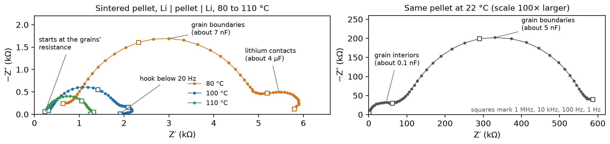
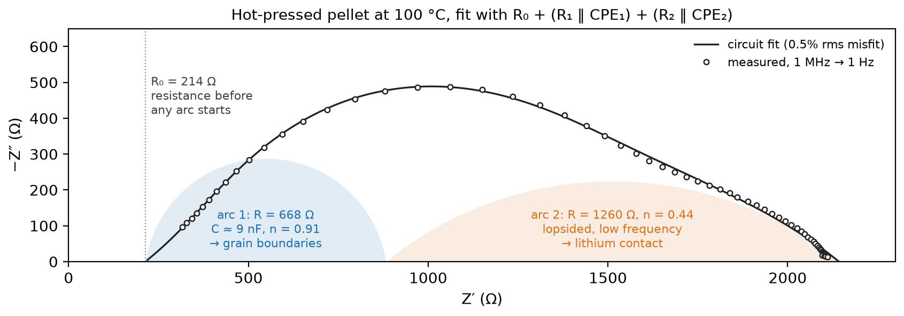
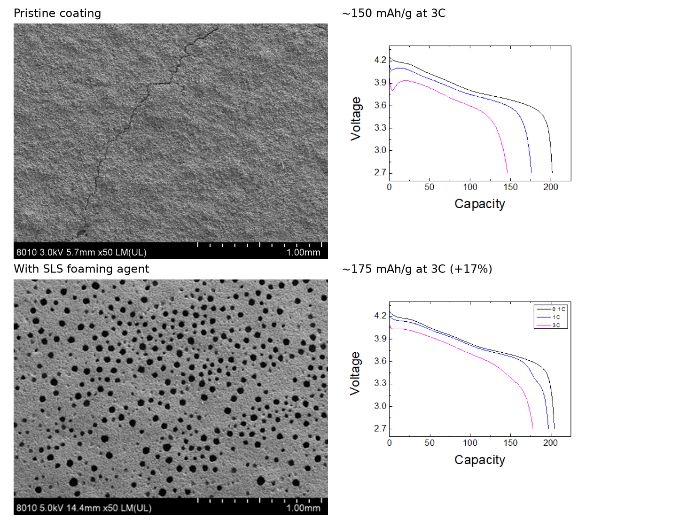

- I. Solid electrolyteMaking Li2OHCl from two salts
- II. Impedance spectroscopyUsing Nyquist plots to separate sources of resistance
- III. Porous cathodesMaking pores with a foaming agent
IMaking a solid electrolyte from two salts
The electrolyte sits between a battery’s two electrodes. It lets lithium ions pass from one side to the other and blocks electrons, which have to go through the outside circuit. Most lithium-ion batteries use a liquid electrolyte, a lithium salt dissolved in organic solvents, and those solvents are flammable (Li 2016, Song 2020).
A solid electrolyte can reduce the fire hazard. It may also allow a lithium metal anode, which would let a cell store more energy (Hood 2016, Song 2018).
The number that matters most is ionic conductivity, σ. A layer of electrolyte with thickness L and area A has resistance R = L/(σA), and the cell loses voltage pushing current through it. The best solid electrolytes reach about 10−2 S/cm, but resistance where the electrolyte meets the electrodes can still limit the cell (Song 2020).
Many solid electrolytes also need long firing at high temperatures or special presses to make dense pellets. Li2OHCl can be made by melting lithium hydroxide and lithium chloride together and letting the melt cool. Both salts are inexpensive, and the resulting compound melts below 300 °C, which makes it possible to cast it (Song 2020). The powder can also be cold-pressed into pellets above 90% of theoretical density (Hood 2016).
Lithium ions move slowly through Li2OHCl at room temperature. Between about 35 and 60 °C, its crystal structure changes from orthorhombic to cubic, and its conductivity rises (Song 2018, Li 2016). At 110 °C, Song measured up to about 10−4 S/cm. The group later described this conductivity as too low for most commercial uses (Xiao 2021). The salts also pick up water from the air, which can change what forms during synthesis.
I worked with Ah-Young Song, whose research showed that rotating hydroxyl groups help lithium ions move through the crystal. I made the powder by induction-melting the salts in an argon glovebox, then casting and grinding the cooled material. I sealed the powder in a zirconia jar under vacuum and ball-milled it outside the glovebox. The new milling process increased conductivity about tenfold.

I prepared pellets from the milled powder by cold pressing, hot pressing at 80 °C or sintering at 150 °C. I placed each pellet between a lithium disk and a stainless steel disk and measured its impedance from room temperature to 110 °C. I made these plots from the original 2020 data.

I tested Li2OHCl as a pressed pellet. In a related study, the group melted a version of the electrolyte into a finished electrode, where it filled pores much like a liquid electrolyte would. With Li1.9OHCl0.9 infiltrated at about 300 °C, a full cell retained over 80% of its capacity after 100 cycles and operated at 60 °C (Xiao 2021). The approach is relevant to my pellets because much of their resistance came from grain boundaries and electrode contacts.
IIUsing impedance to measure pellet resistance
The resistance of a pellet comes from three places: the inside of each grain, the boundaries between grains, and the contacts where the pellet meets the electrodes. A DC measurement gives only their sum. I used impedance spectroscopy to separate them. Most of the resistance turned out to be at the grain boundaries and the contacts. The grains themselves conducted about ten times better than the cell as a whole.
Impedance spectroscopy applies an AC voltage and measures the current that comes back. At each frequency, the ratio of the two is a complex impedance, Z = Z′ + jZ″. Z′ is the part of the response in phase with the voltage, as in a resistor. Z″ is the part out of phase, which comes from stored charge, as in a capacitor. I swept the frequency from 1 MHz down to 1 Hz. A Nyquist plot puts Z′ on the horizontal axis and −Z″ on the vertical axis, with one point per frequency and high frequency on the left.
Each region of a pellet resists current and also stores some charge, so it behaves like a resistor and a capacitor in parallel (R ‖ C). At high frequency the capacitor carries the current and the region looks like a short circuit. At low frequency the capacitor has time to charge fully, and all the current goes through the resistor. In between, the points trace a semicircle. In the plot below, a series resistor Rs shifts the curve to the right, and one R ‖ C pair draws the arc. Changing R changes the size of the arc. Changing C leaves the arc in place and moves the frequencies along it.
modelAn R ‖ C pair draws a semicircle of width R, starting at Rs. Frequency falls from left to right. Dots mark each tenfold step, and the ring marks the top of the arc, where ω = 1/RC. Rs is 100 Ω. C runs from 1 nF to 1 µF.
Two regions give separate arcs when their time constants, RC, are far apart, and capacitance is usually what sets them apart. A layer’s capacitance grows with its area and shrinks with its thickness, so thin layers store more charge. As a rule of thumb, grain interiors give picofarads, grain boundaries nanofarads, and the charged layer at an electrode microfarads (Irvine 1990).
My cells were a pellet pressed between two lithium disks. Lithium ions leave one disk, cross the grains (Rb) and the grain boundaries (Rgb), and enter the other disk. At each lithium face, ions have to cross the interface (Rct), and a charged double layer forms there (Cdl). The two faces are nearly alike, so their arcs overlap into one. Once the pellet is warm, the grain arc moves above 1 MHz, so the measured curve starts on the real axis at Rb.
Measured arcs are flatter than semicircles. Rough interfaces and grains of different sizes spread out the time constants. A constant phase element (CPE), Z = 1/(Q(jω)n), models that spread. With n = 1 it is an ideal capacitor, and lower n flattens the arc. Next to each lithium face, Li+ can also pile up or run short while current flows. Diffusion across that layer adds a Warburg impedance, ZW = σW(1 − j)/√ω, which draws a 45° line at low frequency.
modelEach part of the cell gives its own arc, in order of frequency. Colors match the drawing. The curve starts at Rb = 300 Ω, then comes the grain-boundary arc (blue, 1 nF) and the lithium-face arc (gold, 1 µF). With lithium on both sides it returns to the real axis at Rb + Rgb + Rct, the DC resistance of the cell. Lower n to flatten the arcs. Add diffusion to get a 45° tail (red). Switch the right-hand disk to steel: lithium cannot cross into it, so no steady current flows, and the low-frequency end rises (gray) instead of returning to the axis.
To get conductivity, I read resistances where the curve meets the real axis and used σ = L/(R·A), with L the pellet thickness and A its area. The left end of the curve gives the grains alone. The right end gives the whole cell.
I measured the sintered pellet at six temperatures, and the plot below shows four of them. From 80 to 110 °C, the large arc peaks between 6 and 30 kHz and moves to higher frequency as it shrinks. Its width and peak frequency give about 7 nF at every temperature from 40 to 110 °C, in the grain-boundary range. At 80 °C a smaller second arc peaks near 40 Hz with about 4 µF, which fits the lithium faces. At 22 °C the cell measured about 590 kΩ, and a small arc appears between 1 MHz and 10 kHz. Its capacitance is about 0.1 nF, so it most likely comes from the grain interiors.

The hook at the end of the warm curves
At 100 and 110 °C, Z′ gets smaller below about 20 Hz as the frequency falls, and the curve bends back toward the axis. In a circuit of resistors and capacitors, Z′ can only grow as the frequency falls. A loop that crosses below the axis can mean inductance. In a cell setup, the usual inductance comes from the cables and leads, and it shows up at the high-frequency end, above about 100 kHz (Orazem & Tribollet 2017). This hook is at the low-frequency end, and the points never cross the axis before the sweep stops at 1 Hz, so lead inductance does not explain it.
Two checks suggest that the cell was changing while I measured it. A Kramers–Kronig test asks whether a spectrum could have come from a stable, linear system (Schönleber 2014). The sintered spectrum at 100 °C passes within about 3% above 20 Hz but misses by 7% at 1 Hz. The hot-pressed pellet at the same temperature passes within 0.3% at every frequency and has no hook. The potentiostat also logged a DC current through the sintered cell that grew from nearly zero at 200 Hz to about 10 µA at 2 Hz, though I applied no DC voltage. In the hot-pressed cell it stayed below 1 µA. A pure AC signal should not drive a DC current. Either the cell’s response was nonlinear or its own voltage was drifting, and both break the assumptions behind the plot. My 500 mV signal was much larger than the 10 mV or so usually used to keep the response linear, which may have contributed.
Because of the hook, I estimated each contribution from the hot-pressed pellet at 100 °C instead. The circuit has a series resistor R₀ and two resistor–CPE pairs, one for the grain boundaries and one for the lithium faces. The fit matched the data to within 0.5%.

Using only R₀ gives a conductivity of at least 2.6 × 10−4 S/cm at 100 °C. Adding the grain boundaries brings it to 6.4 × 10−5 S/cm, and adding the lithium faces gives 2.6 × 10−5 S/cm, the whole-cell value in the conductivity plot above. Song’s published value of about 10−4 S/cm at 110 °C falls between the first two. In my pellets, grain boundaries and contacts accounted for about 90% of the resistance.
IIIMaking porous cathodes with foam
Many electric-car batteries use a cathode made from nickel-manganese-cobalt oxide (NMC) mixed with carbon and binder and coated onto aluminum foil. A thicker coating can store more energy per cell, but it also lengthens the path lithium ions have to travel. Diffusion time scales with the square of distance, so doubling the coating thickness can make ion transport take four times as long (Kim 2023).
I worked with Doyoub Kim, who used a laser to drill cone-shaped channels into finished electrodes. In his thesis, channels spaced 100 µm apart doubled the capacity of a thick cathode at a one-hour charge rate and quadrupled it at a 30-minute rate (Kim 2023). We wanted a simpler way to make pores that could scale up more easily.
I tried foaming the slurry with sodium lauryl sulfate (SLS), a foaming agent used in shampoos. I added SLS and a little water before mixing, then cast and dried the coating so the bubbles left pores behind. I varied the amount of SLS (0.4 or 0.75 g), mixing time (1 to 4 minutes), mixer speed (400 to 1600 rpm) and drying temperature (300 to 500 °C). I counted pores in electron micrographs with ImageJ and tested the coatings in half-cells. The best result used 0.75 g of SLS, mixed for 1 minute at 1200 rpm and dried at 300 °C.

Foaming added one step to mixing, but batches made with the same settings sometimes produced different pore sizes and performance. My next step would have been to adjust the ratio of NMC, carbon and binder to make the pores more consistent. I coauthored a later ECS abstract on scalable water-based processing for fast-charge electrodes.
Sources
- A.-Y. Song et al., Protons enhance conductivities in lithium halide hydroxide/lithium oxyhalide solid electrolytes by forming rotating hydroxy groups. Advanced Energy Materials 8, 1700971 (2018). doi
- A.-Y. Song et al., Understanding Li-ion dynamics in lithium hydroxychloride (Li2OHCl) solid state electrolyte via addressing the role of protons. Advanced Energy Materials 10, 1903480 (2020). doi
- Z. D. Hood et al., Li2OHCl crystalline electrolyte for stable metallic lithium anodes. Journal of the American Chemical Society 138, 1768 (2016). doi
- Y. Li et al., Fluorine-doped antiperovskite electrolyte for all-solid-state lithium-ion batteries. Angewandte Chemie 55, 9965 (2016). doi
- Y. Xiao et al., Electrolyte melt infiltration for scalable manufacturing of inorganic all-solid-state lithium-ion batteries. Nature Materials 20, 984 (2021). doi
- D. Kim, Enhancing ion transport in thick Li-ion battery electrodes by pore engineering. PhD thesis, Georgia Institute of Technology (2023).
- D. Kim, A. Magasinski, K. Hunady et al., Scalable aqueous battery electrode processing strategy to improve high C-rate capability of Li-ion battery electrodes. ECS Meeting Abstracts MA2023-01, 603 (2023). doi
- K. Hunady, The story of solid sulfide electrolytes viewed through impedance spectroscopy. Class talk, MSE 7140, Georgia Tech (Fall 2021).
- K. Hunady, Boosting Li-ion battery performance using shampoo. Talk, Yushin group, Georgia Tech (November 2021).